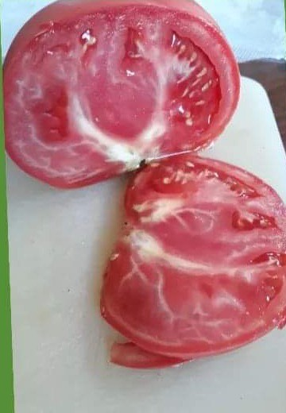
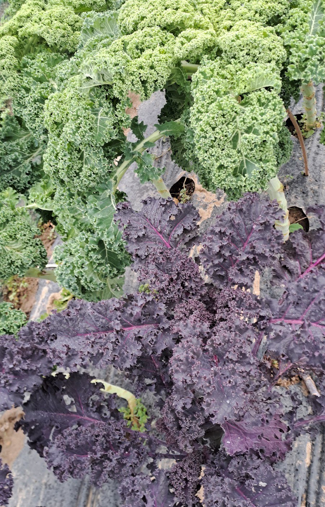

Ljuto, ljuće,Carolina Reaper.
Sve što prodajemo uzgajamo i prerađujemo na svom gospodarstvu u Nedelišću. Ponuda prati sezonu, pa za određenu sortu ili veću količinu nazovite prije dolaska.

Dvadeset sorti u tri plastenika.
Čili sadimo u plastenike podijeljene po ljutini, a mreže na bočnim otvorima i između sorti čuvaju ih da se što manje miješaju. Najviše sadimo jalapeño, a Carolinu Reaper uzgajamo u crvenoj i žutoj varijanti.
Svježe papričice možete koristiti u kuhanju, sušiti ih ili od njih raditi vlastite umake i ajvar.
Sorte su navedene prema razgovorima s obitelji Preložnjak u medijima. Što je trenutno u berbi, provjerite na 098 570 185.

Crna etiketa, crveni plamen.
Naši ljuti umaci nastaju fermentacijom i kuhanjem. Od sušenih papričica radimo i suhe posipe za razna jela. Na etiketi piše sorta, pa lako birate prema ljutini.
Nazivi su preuzeti s etiketa na fotografiji koju je OPG objavio na Google kartama. Asortiman se mijenja, pa pitajte koji su umaci trenutno dostupni.
Kiselo, a i ljuto.
Ljeti, kad je u plasteniku prevruće, sredinom dana prerađujemo povrće. U zadnje vrijeme najviše se igramo s ukiseljenom zimnicom uz dodatak ljutih papričica.
- Ukiseljena cvjetača s ljutom papričicom
- Rezani krastavci za sendviče s habanerom
- Zimnice od vlastitog povrća
- Džemovi
Zimnica je sezonska i ima je dok traje. Pitajte što je trenutno u teglama.


Flanci za vaš vrt.
Sjeme sijemo u kontejnere u toplom klijalištu, a u proljeće presadnice pikiramo. Najviše brige traže upravo najljuće sorte: što je papričica ljuća, to sjeme slabije klija.
U ponudi su presadnice čili papričica i povrća. Za sorte i količine javite se telefonom ili porukom.
Pitajte za presadnice
Sezonsko povrće.
S povrćem je sve počelo. Uz čili u plastenicima uzgajamo i sezonsko povrće, a jedan plastenik čuvamo za slatku papriku. Rajčicu i krastavce sadimo i kao prirodnu barijeru između sorti čilija.
- Rajčica
- Slatka paprika
- Krastavci
- Salata
- Začinsko bilje

Oranica u Drvišću.
Osim plastenika obrađujemo zemlju na otvorenom između njih te oranicu u predjelu Drvišće, uz Dravu.
- Krumpir
- Tikve
- Kukuruz
- Cvjetača
- Cikla
- Kikiriki